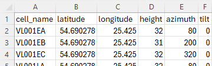
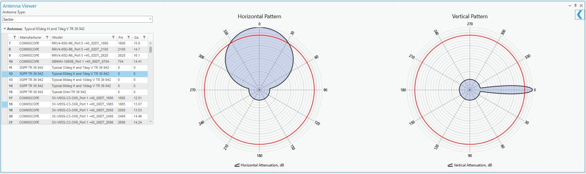
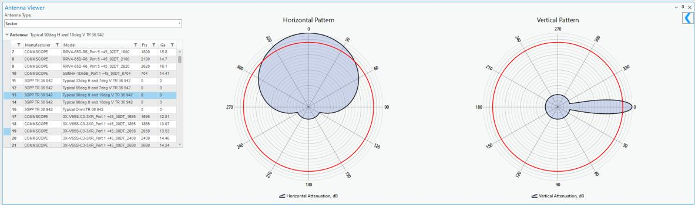
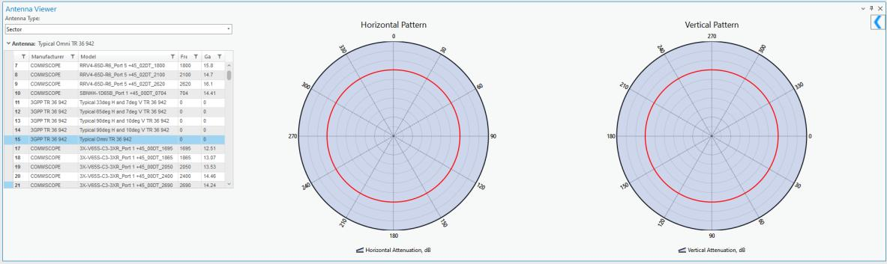
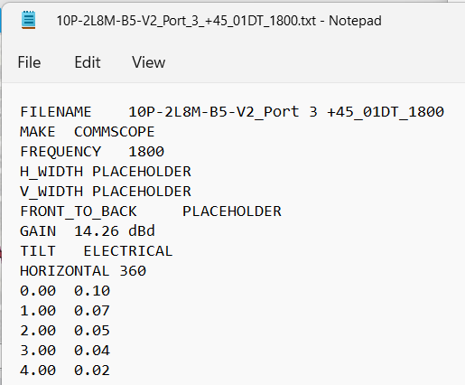

Requirements for CE Network Objects
Version: CE Pro v4.9 / CE Express v7.2
Cellular Expert Network Requirements 1. Primary Data Structure
1.1 Import from CSV file
First row represents field name, and 2nd, 3rd, 4th, etc represents value. Field names are not crucial, as CE includes a mapping function to align external database fields with the CE database structure.
1.2 Import from Organization’s Portal
The point layer shared on the Organization’s ArcGIS Enterpris Portal or ArcGIS Online can be imported into the CE Database. Field names are not crucial, as CE includes a mapping function to align external database fields with the CE database structure. 2. Cells
2.1 Minimum requirements
Value CE Field Units Example Description Latitude y Degrees 49.9993 Y point coordinate in Decimal degrees and in WGS 1984 geographical coordinate system. Longitude x Degrees 33.6573 X point coordinate in Decimal degrees and in WGS 1984 geographical coordinate system. Unique cell_name [text] 5G cell XXYY Represents cell identification, usually

identification name.2.2 Optional information
2.2.1 Height Antenna (cell) height in meters above ground level. If the Mobile Operator cannot provide this information, a default value can be applied based on land use types. For example, in rural areas where towers are
commonly used, the height might be set to 60 meters. 2.2.2 Azimuth Antenna (cell) direction relative to true north, with values ranging from 0 to 359 degrees. If the Mobile Operator cannot provide the cell azimuth value, the following can be applied: - Set the value to 0 and designate the antenna type as Omnidirectional. - Automatically assign azimuth values based on the number of antennas on the tower. For example, if there are 3 antennas, the azimuths would be 0, 120, and 240 degrees. 2.2.3 Mechanical tilt Antenna (cell) vertical direction. If Mobile Operator cannot provide Cell tilt value then we can use value – 0. 2.2.4 Frequency Cell frequency value in MHz. If the frequency is missing, it can be determined based on the following: - The operator's technology. - The frequency bands associated with this technology and operator. 2.2.5 Power Cell power in dBm. 2.2.6 Antenna gain Antenna gain in dBi, which is taken automatically from defined antenna for Cell. 2.2.7 Losses Miscellaneous losses in dB, which shows total losses for cables, feeders, etc. 2.2.8 Bandwidth Cell bandwidth value in MHz. Especially required for 3G, 4G, and 5G technologies. If Mobile Operators cannot provide this parameter, then we can apply default value based on technology and frequency band. 2.2.9 Subcarrier spacing Especially required for 5G, while 4G uses constant value – 15. Units are in kHz. If Mobile Operators cannot provide this parameter for 5G technology, then we can apply default value based on frequency band.
2.2.10 TX MIMO Transmitter MIMO configuration, with possible values of 1, 2, 4, 8, 16, 32, 64. If Mobile Operators cannot provide this parameter, a default value of 1 is typically used. 2.2.11 RX MIMO Receiver MIMO configuration, with possible values of 1, 2, 4, 8, 16, 32, 64. If Mobile Operators cannot provide this parameter, a default value of 1 is typically used. 2.2.12 Technology Antenna (cell) technology, with possible values including 2G, 3G, 4G, 5G, and WiFi. If the Mobile Operator


cannot provide this parameter, we can: - Estimate the technology based on the frequency. - Default to 2G if only Signal Strength calculation is needed. 2.2.13 Antenna name The antenna should be imported into the database, with its ID assigned to each Cell object. If Mobile Operators cannot provide specific antenna names and patterns, a worst-case scenario can be applied using typical antennas generated according to 3GPP standards. Typical 65deg Horizontal and 7deg vertical antenna Typical 90deg Horizontal and 10deg vertical antennaTypical Omni 360deg antenna 2.2.13.1 Antenna pattern file structure The text file in Planet format represents: - Main antenna parameters, such as name, gain value. - Horizontal pattern. - Vertical pattern. Such files can be imported into Cellular Expert database. 2.2.14 Site (Tower) identification Represents the Site (Tower) name in text format. This information enables the automatic creation of Site


objects along with Cell objects. If the information is missing, it will be skipped.- Sites (optional) Sites as an object can be imported and visualized in the project. Value CE Field Units Example Description Latitude latitude Degrees 49.9993 Y point coordinate in Decimal degrees and in WGS 1984 geographical coordinate system. Longitude longitude Degrees 33.6573 X point coordinate in Decimal degrees and in WGS 1984 geographical coordinate system. Site identification site_name [text] Site 55 ID Represents site identification, usually name.